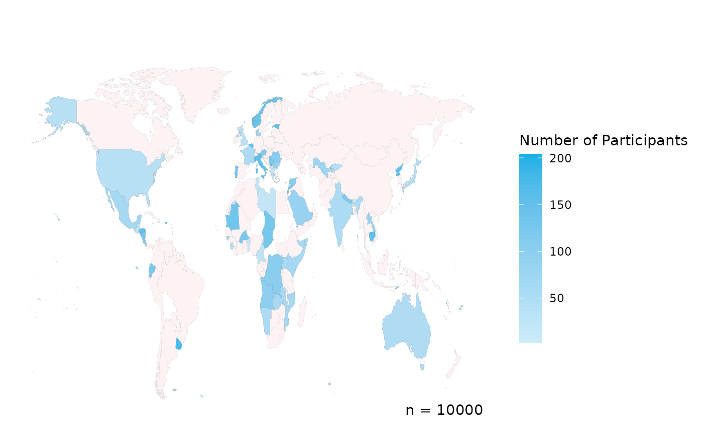
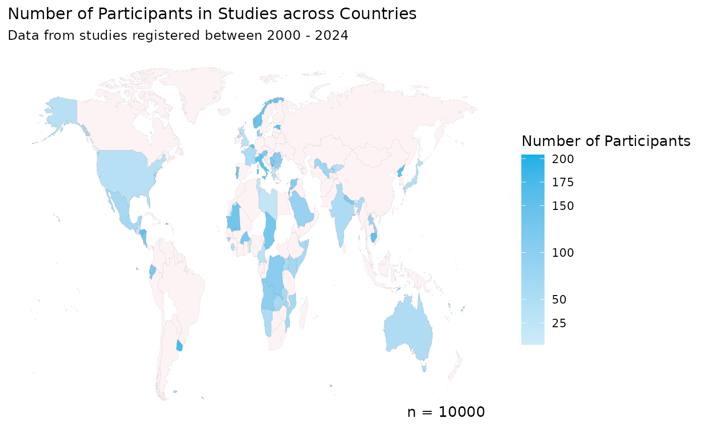

Create a cloropleth map of the number of participants in a dataset
create_participant_map.RdCreate a cloropleth map of the number of participants in a dataset
Usage
create_participant_map(
data,
country_col,
include_ATA = FALSE,
include_n = TRUE,
title = "",
subtitle = "",
legend = "Number of Participants",
colour_high = "#14B1E7",
colour_low = "#CCECF9",
colour_default = "#FDF3F4",
colour_borders = "black",
colour_background = "#FFFFFF",
colour_text = "black",
scale_breaks = pretty_breaks(),
log_scale = FALSE
)Arguments
- data
Data frame with includes a column with 3 letter ISO country codes which are to plotted on the map. The Demographics (DM) domain in SDTM and IDDO-SDTM for example.
- country_col
Character. The name of the column containing the 3 letter ISO country codes.
- include_ATA
Boolean. Should Antarctica be included on the map? Default is
FALSE.- include_n
Boolean. Should
n = Xwhere X is the number of participants, be included in the map. Default isTRUE.- title
Character. Title of the choropleth map.
- subtitle
Character. Subtitle of the choropleth map.
- legend
Character. Legend title of the choropleth map.
- colour_high
Colour of the high end of the scale, either using the name of a base colour or the HEX code, i.e. "red" or "#F9250C. This will be the colour of the country with the highest value. Default is IDDO-branded blue "#14B1E7".
- colour_low
Colour of the low end of the scale, either using the name of a base colour or the HEX code, i.e. "red" or "#F9250C. This will be the colour of the country with the lowest value. Default is IDDO branded blue at 30% tint, "#CCECF9".
- colour_default
Colour of the other countries without participant data, either using the name of a base colour or the HEX code, i.e. "red" or "#F9250C. Default is IDDO branded red at 5% tint, "#FDF3F4".
- colour_borders
Colour of the country borders, either using the name of a base colour or the HEX code, i.e. "red" or "#F9250C. Default is "black".
- colour_background
Colour of the plot background, either using the name of a base colour or the HEX code, i.e. "red" or "#F9250C". Default is "#FFFFFF" (white).
- colour_text
Colour of the legend title, text and 'n = ' (if include_n == TRUE), either using the name of a base colour or the HEX code, i.e. "red" or "#F9250C". Default is black.
- scale_breaks
Numeric list. Specify custom scale breaks for the legend, i.e. c(100, 500, 1000, 2000). Default is pretty_breaks from the scales package.
- log_scale
Boolean. Should the number of participants be transformed into the log scale for when the distribution of values is very uneven. Default is
FALSE.
Examples
library(worlddatr)
set.seed(123) # for reproducibility
countries <- sample(world_income$alpha_3_code, 100, replace = FALSE)
probabilities <- runif(length(countries))
probabilities <- probabilities / sum(probabilities)
country_data <- data.frame(COUNTRY = sample(countries, 10000, replace = TRUE, prob = probabilities))
create_participant_map(data = country_data,
country_col = "COUNTRY"
)

create_participant_map(data = country_data,
country_col = "COUNTRY",
include_ATA = FALSE,
include_n = TRUE,
title = "Number of Participants in Studies across Countries",
subtitle = "Data from studies registered between 2000 - 2024",
colour_high = "#14B1E7",
colour_low = "#CCECF9",
colour_default = "#FDF3F4",
colour_borders = "black",
colour_background = "#FFFFFF",
colour_text = "black",
scale_breaks = c(25, 50, 100, 150, 175, 200),
log_scale = FALSE
)
